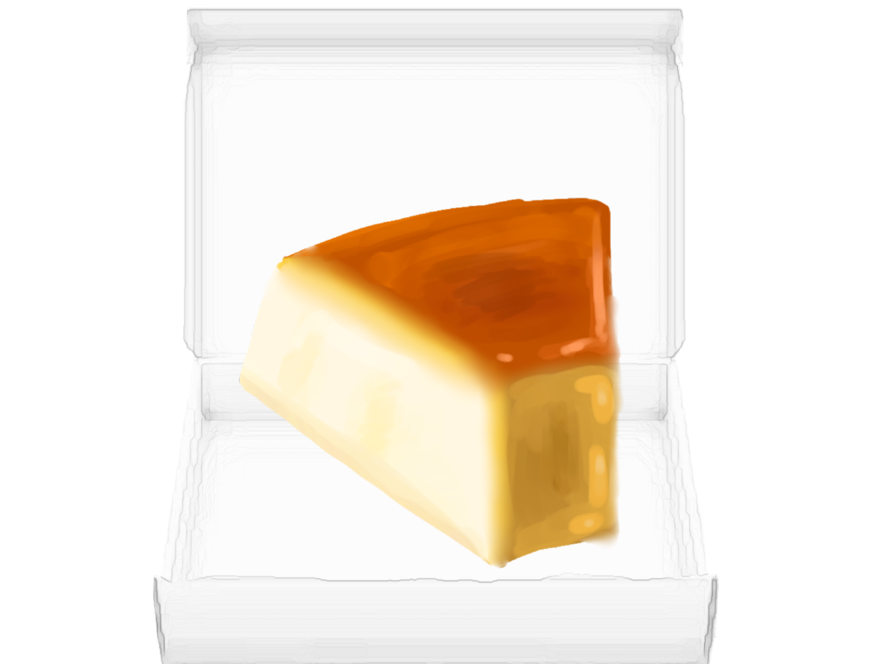

Home
Interview 1
Interview 2
Interview 3
Take Away
The second person whom I was able to interview, (Maria) to aid my baking journey was my aunt. My aunt started baking around the age of twelve years old since she had to help her mother with cooking duties. I have been eating her baked goods basically all my life since she often brings them to family gatherings. Some of the things that she baked are cakes, pies and flan which are some of the recipes that she recommended I try.Regarding equipment she actually gave me a big list on equipment she recommends, which include:Weighing scale,measuring spoons, Round Cake pan, Square pan, Flat sheet trays,Oven thermometer,Silicon spatula, rolling pins ,hand mixer,palette knife ,whisk, basic piping tips ,fine mesh strainer , oven mitts, and silicone mats. The cake pans she told be to get different shapes mainly for aesthetics, at least for cakes, and for other baking goods like brownies, while flat sheet trays are used for baking things like cookies . Weighing scales and measuring spoons are good for having accurate measurements in your ingredients to not mess up the flavor or texture. The thermometer would let you see the exact temperature of the oven which is important in baking as underheating can result in soggy and raw batter, while overheating can leave a dry texture or a burnt flavor.Silicon spatulas are great for sticky mixes like caramels or pastry cream. The way silicon spatula bends allows better scraping to prevent burns on the bottom of the pan and told me the good ones usually have a reddish handle and white scraper tip.Rolling pins are for flattening out dough or crumbling things like cookies,hand mixers are good for heavy duty mixing like meringue, buttercream, frosting, foams.Palette knives are good for spreading batters ,leveling frosting, or decorating which basic piping tips would also do . A whisk is used for mixing by hand ,fine mesh strainers are good for sifting and straining ingredients like flour, sugar ,or baking soda.oven mitts are used to take things in and out of the oven without burning yourself, and silicone mats are good for a lot of things but my aunt mainly uses them instead of parchment paper(helps save money) or a clean surface to knead dough. Some beginner mistakes she said to avoid were to take proper measurements,use room temperature ingredients,no baking substitutions,no overmixing,no opening the oven while something is baking to allow whatever is baking to do so evenly and not adding too much baking soda or baking powder as doing so leaves a bitter taste to the final product.For good consistency she mentioned to try to use as equal measurements as possible and for good quality she said it can be good to spend on high quality ingredients.
Click to eat the treat

Take Away:
Thinking back on talking with my aunt about baking, I realize she shared a lot of smart tips. She's been baking since she was young, so she knows her stuff.he gave me a long list of tools to get, but they all seem useful.I liked her advice on using certain tools for specific jobs, like silicon spatulas for sticky mixes. And she warned me about common mistakes, like overmixing or opening the oven too much.Overall, talking to her gave me confidence to try new things in the kitchen. I'm thankful for her help and excited to see how my baking improves because of her.